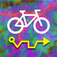

0,00 km · 0,0 kJ

amora: ajudante bicigeoenergéticoCarregando…
Arraste para mover, scroll/pinça para zoom. Para girar: dois dedos girando (celular) ou Shift + roda do mouse (computador); a bússola que aparece à esquerda volta o norte pra cima. O painel de camadas (canto sup. direito) controla visibilidade e opacidade de cada camada — base (OSM ou satélite), sobreposições (Topografia colorida, SARA Brasil 1930, rotas cadastradas) e duas camadas customizáveis (XYZ e WMS — clique no ✎ para colar uma URL).
A barra lateral lista as rotas em ordem decrescente de data. Use o filtro de data para mostrar só as rotas dentro de uma janela. Clique numa rota para abrir o post do Instagram + atalho para abrir no RideWithGPS, ou para entrar no editor (Editar este traçado) com aquela rota carregada.
📂 Carregar abre uma rota cadastrada no servidor ou um .gpx local no editor. Se for um arquivo gerado por este app, parâmetros de simulação e waypoints originais voltam exatamente como estavam.
.gpx, que inclui os parâmetros de simulação, a lista de waypoints e o modo de roteamento de cada trecho como extensões — invisíveis para Garmin/Strava/RWGPS, mas usados ao reabrir aqui. ☁ Salvar no servidor grava/atualiza a rota; Copiar link/QR também salvam e compartilham o link por nome (/route/<nome>).Clique em um ponto da edição → popup permite renomear, marcar como POI e escolher um símbolo Garmin. POIs viram <wpt> no GPX e aparecem como pinos no Edge.
O cabeçalho do editor mostra distância, altimetria (↑/↓), tempo de movimento + tempo total, velocidade média e energia gasta pelo ciclista (kJ). Clique em ⚙ Parâmetros para ajustar massa, Crr, CdA, ρ, potência por terreno (subida / plano / descida), ε (recuperação em descida), eficiência de movimento e limiar de plano. Os parâmetros podem ser salvos / carregados como JSON-LD com vocabulário QUDT (RDF).
Sem conta, sem anúncios, sem rastreadores. O que você envia vira acervo público, e a localização ao vivo é opcional e passageira — os detalhes estão na política de privacidade.
O amora é software livre, sob a GNU AGPL v3.0: o código está em github.com/pedalhidro/amora. Quem rodar uma versão modificada pra outras pessoas pela rede tem que oferecer o código dela também.
feito por Cláudio · pedido e dirigido pelos neogeógrafos hidrográficos
O nome vira o endereço da rota no servidor (/route/…) — Salvar no servidor, Copiar link e QR salvam com esse nome (se já existir uma rota homônima, perguntamos se é pra atualizá-la). Exportar GPX baixa tracado.gpx.
Rotas salvas no servidor
Nenhuma rota salva no servidor ainda.
Este GPX tem 0 pontos.
Em Reta, o traço inteiro é preservado (geometria exata) — num GPX denso, ~150 dos pontos viram pontos editáveis e o resto segue como o desenho entre eles. Os modos roteados reamostram para ~100 pontos e recalculam o caminho entre eles, usando os mesmos parâmetros da barra de edição (⚙).
Sua posição e a trajetória ficam visíveis para quem estiver no mapa — opt-in, pseudônimo e efêmero. Nada fica salvo permanentemente.
No navegador a transmissão pausa com a tela apagada ou em outro app, e volta quando você reabre o amora. Celular no guidão? Deixe a tela acesa:
No app a transmissão continua com a tela apagada.
A velocidade é simulada por segmento a partir destes valores. A potência do ciclista varia por terreno (subida / plano / descida — o limiar é configurável abaixo). Em descidas o ciclista recupera apenas ε% da energia gravitacional como velocidade. O tempo total é o tempo de movimento dividido pela eficiência de movimento (paradas, semáforos, imagens). A energia (kJ) usa o modelo v2 (bicycling-energy-model): arrasto cobrado só fora das subidas (à velocidade de plano v_f, derivada da potência de plano), recuperação na descida estimada do próprio perfil e um deadband de elevação — o ε acima afeta só a velocidade/tempo, não a energia.
O custo de roteamento usa o modelo de energia v2 derivado dos parâmetros físicos acima (massa, Crr, CdA, ρ, eficiência da transmissão e a velocidade de plano vinda da potência) — os antigos α/β/η foram removidos.
Fontes de elevação e de viário pro perfil e pro roteamento por energia. Um DEM custom ou uma rede viária custom carregados abaixo têm prioridade sobre o FABDEM/DEM de SP e o viário da América do Sul onde cobrirem.
GeoTIFF em EPSG:4326 (graus). Tem prioridade sobre o DEM de SP e o FABDEM onde cobrir; fora da extensão cai pras fontes acima. Fica só em memória (some ao recarregar).
FlatGeobuf (linhas), GeoPackage (camada LINESTRING) ou GeoJSON de linhas, em WGS84. Tem prioridade sobre o viário da América do Sul. Tags bridge/tunnel/layer (se houver) achatam o tabuleiro; sem elas, os tabuleiros são casados por proximidade com as pontes do viário. Fica só em memória (some ao recarregar).
Energia do SUV pelo mesmo modelo v2 da bike, na mesma rota e segmento a segmento, com a física do carro abaixo e um perfil de potência de 3 níveis próprio (subida/plano/descida). Arrasto aerodinâmico é cobrado em 100% da distância, inclusive subindo (o SUV mantém a velocidade do seu perfil de potência; a bike desacelera o bastante numa subida pra zerar o arrasto). O fator metabólico escala a energia mecânica da bike pra energia de comida consumida (eficiência humana ~25% → ~4×), pra comparar "energia de entrada" dos dois lados.
Relevo do FABDEM (tiles de cameratopo.pedalhidrografi.co): elevação na paleta cmocean.phase multiplicada pela declividade. Deixe um campo em branco para automático (o servidor resolve por percentis de uma região de referência). "Estimar pela extensão atual" preenche valores adaptados à área visível.
De onde o app puxa o arquivo TTL.
—
Tamanho relativo dos pontos em clusters, em função do zoom.
Aplicados no carregamento da página.
Marcadores de foto usam variante 2× (grande) pra ficarem nítidos em telas HiDPI. Em celulares com pouca memória isso pode travar — manter desligado segura tudo no thumb (256 px). Não afeta o preview que abre ao clicar.
Quando ligado, o modal de rota e o censo listam quem participou de cada passeio (schema:attendee) e quem foi iniciante (ph:hasNewcomer). O upload_tour passa a expor os campos pra edição. Os triples no TTL permanecem independente do toggle — isto só controla a renderização.
Veja onde estão (e por onde passaram nas últimas 3 h) as pessoas que estão compartilhando — e, se quiser, compartilhe a sua. Opt-in e pseudônimo. Nada fica salvo: as posições só vivem na memória do servidor e o rastro de cada pessoa some sozinho ~3 h depois do último ponto. No navegador a transmissão funciona com a tela ligada e o app aberto; com a tela apagada ela pausa (limite da plataforma — o app nativo cobre esse caso). Para só ver (sem transmitir), use a camada “Pessoas ao vivo” no painel de camadas 🗺️.
Leque translúcido apontando para a direção em que a foto foi tirada (extraído do EXIF — bússola e distância focal).
Anel branco que pulsa com o áudio do clipe que está tocando.
Loop ambiente só com áudio dos clipes (independente do vídeo de Animação).
Comportamento dos clipes em laço sobre o mapa quando Animação está ligada.
JSON-LD com todos os parâmetros acima.